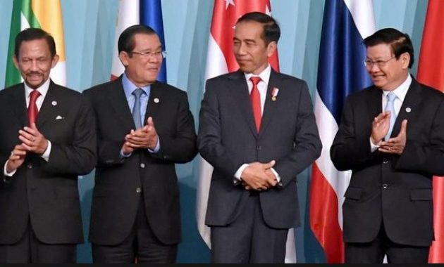

.png)



Pengertian : Melibatkan tiga negara atau lebih yang bekerja bersama dalam isu atau kepentingan bersama yang seringkali bersifat global seperti ekonomi, kesehatan, keamanan, dan lingkungan.
Contoh Organisasi Multilateral : PBB (Perserikatan Bangsa-bangsa), WHO (Organisasi kesehatan dunia), WTO (World trade organization), ASEAN (Association of Southeast Asian Nations)
Tujuan Multilateral : Meningkatkan Ekonomi Global : Melalui perjanjian perdagangan internasional, negara-negara dapat mengurangi hambatan perdagangan, meningkatkan investasi, serta menciptakan peluang ekonomi baru yang menguntungkan bagi negara-negara terlibat. Pembangunan Berkelanjutan : Negara-negara berkolaborasi untuk mencapai Tujuan. Pembangunan Berkelanjutan (Sustainable Development Goals/SDGs), yang bertujuan meningkatkan kesejahteraan manusia secara holistik, dengan mengurangi kemiskinan, ketimpangan, dan kerusakan lingkungan. Meningkatkan Perdamaian dan Keamanan Dunia : Kerja sama internasional bertujuan menjaga perdamaian dunia dengan cara menyelesaikan konflik, menghindari peperangan, serta memerangi ancaman global seperti terorisme, narkoba, dan proliferasi senjata nuklir. Mengatasi Isu Global : Seperti perubahan iklim pandemi global (seperti COVID-19), dan kesenjangan sosial-ekonomi antarnegara. Negara-negara bekerja sama untuk membuat kebijakan yang dapat mengurangi dampak negatif isu-isu tersebut.
Manfaat Kerjasama Multilateral : Pengurangan Konflik = menyelesaikan perselisihan secara damai. Peningkatan kesejahteraan = Negara-negara dapat saling berbagi pengetahuan, teknologi, dan sumber daya. Solusi masalah global = Mengatasi masalah seperti perubahan iklim, krisis pangan, dan kemiskinan global. Perdagangan yang lebih adil = Kerjasama Internasional membantu menciptakan sistem perdagangan yang lebih adil.